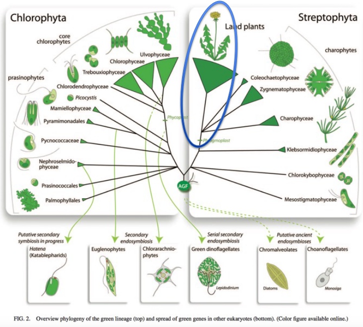
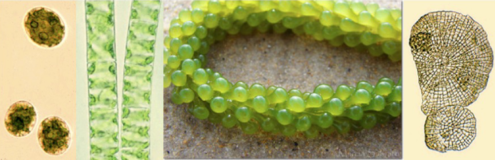
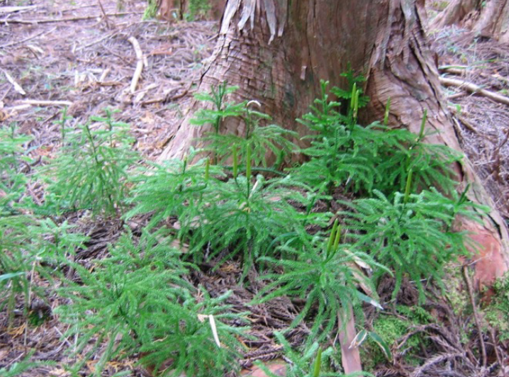
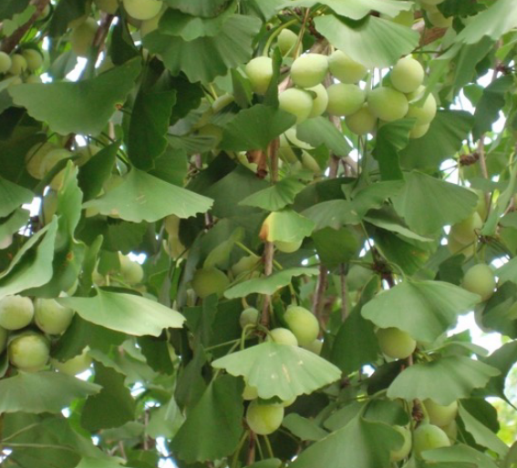
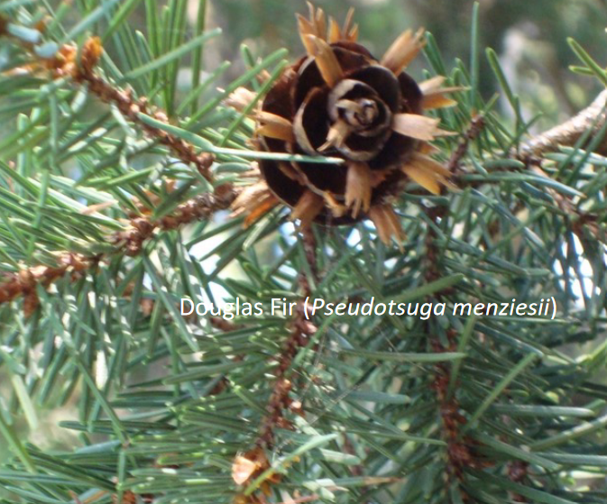
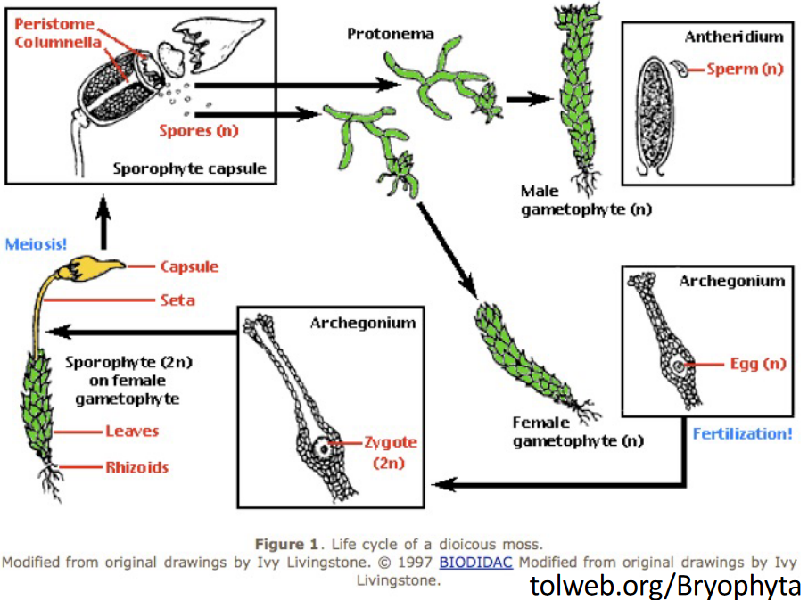

1 Plant Diversity
Studying Plant Biology is important for a few reasons. First, plants have a connection to some people’s school programs, at least in some way. Second, they’re useful for studying development and other processes. Third, by looking at plants, one can understand things from genes to whole communities. Lastly, plants matter a lot.
In this lecture, there are some important words to remember:
- Selection
- Adaptation
- Phylogeny
- Convergence / Divergence
Plants are incredibly important because life wouldn’t be possible without them. They provide us with essential things we need to survive. Imagine staple foods like rice, wheat, corn, and potatoes – these come from plants and make up a big part of our diets. Even things like fruits, herbs, and spices, like chili, coffee, and chocolate, all come from different types of plants. Each of these plants contributes to the foods we eat and enjoy.
Nowadays, people are getting more worried about having enough food for everyone. That’s why understanding plant biology is super important now. It helps us make sure there’s enough food for everyone.
In this week’s session, we’re going to learn about a few things:
- What exactly are plants?
- The main groups of plants and what makes each group special.
- Even though plants might seem simple on the outside, they’re actually really diverse in how they live and behave. We’ll look into why that is.
- We’ll also explore where all this diversity of plants came from.
1.1 What is a Plant?
When we look at living things, it’s normal to put them into groups based on the things they have in common. People have always done this. In the case of plants, this grouping is called taxonomy. Traditionally, plants were sorted into groups based on what they looked like and how they were different from each other.
Nonetheless, for a long time, scientists have looked at specific traits to understand what makes something a plant. These traits have taught us a couple of important things about plants:
Plants are organisms that use a process called photosynthesis to make their own food. This sets them apart from many other living things.
They have a special way of life that involves different stages in their cycle. Sometimes they have a part that’s like a “baby” version (called gametophyte) and another part that’s more grown-up (called sporophyte). This alternation between these two stages is a big part of what makes plants unique.
As scientists have discovered more about different living things, they’ve had to rethink how they define plants. Organisms that were once thought to belong only to the “Plant Kingdom” have been moved to their own groups, like Fungi. This is because we now know more about their characteristics.
The way scientists sort living things has also changed over time. It started with a simple “Two Kingdom” idea, where there were just Plants and Animals. Then it grew to a “Five Kingdom” idea, adding Fungi, Protists, and Bacteria. Now, things have evolved even more into the concept of “Three Domains”: Eukaryota, Archaea, and Bacteria. But what’s really important is that the way scientists classify living things has shifted. Instead of just looking at how things appear, they now focus a lot on the relationships between organisms and how they’ve evolved. This new way of sorting is all about understanding the family tree of life.
Defining plants can be a bit tricky. Some people think of plants as organisms that can make their own food through a process called photosynthesis. They also have a special kind of life cycle called “alternation of generations.” However, not every organism with these features belongs to the same group on the tree of life as plants do.
In this course, the focus is narrowed down. They will be looking specifically at “green plants.” And to be even more precise, they’ll be studying “Land Plants,” which are also known as “Embryophytes.” These are the plants that live on land and have certain characteristics that set them apart.
1.1.1 Phylogeny versus Classification
Phylogeny is about showing how different living things are related to each other. It’s like drawing a family tree that connects all the creatures. These family trees not only tell us about relationships but also give clues about the history and environment of different groups of organisms. Plus, they show how organisms have changed over time to fit their surroundings better.
Classification, on the other hand, is more about giving names and organizing the incredible variety of life. It’s like putting different things into different boxes based on how they look or behave.
Now, when it comes to plants, their phylogeny helps experts decide how to classify them. By understanding the connections between different plant groups, scientists can figure out the best way to group and name them. It’s like solving a puzzle where the pieces are the relationships between plants.
If a plant flowers, it’s called a angiosperm. Otherwise, it’s a gymnosperm.
1.2 Overview of Plant Phylogeny
1.2.1 Green Algae

On the left side of the image, there are single-celled organisms, meaning they’re made up of just one cell. Moving towards the right, there are filamentous organisms, which are like chains of cells. And on the far right, there’s something called “coenocytic.” This means it’s a big organism with many nuclei, or control centers, inside it. Unlike most organisms that have individual cells, this one doesn’t have clear divisions between its cells inside.
1.2.2 Locophytes

1.2.3 Gingko Tree

Talking about the Ginkgo, there’s just one type that exists now, called Ginkgo biloba. But in the past, there used to be more types of this plant. They were part of a bigger group called gymnosperms.
1.2.4 Conifers

When it comes to gymnosperms, the most familiar group is conifers. This group includes well-known trees like pines, firs, spruces, and even hemlocks. There’s quite a variety in this group.
1.3 Plant Life Cycle
Think back to meiosis and fertilization – meiosis is like a special kind of division that takes a cell from having two sets of stuff (2N) to just one set (1N), while fertilization is when two cells with one set each (N + N) come together to make a cell with two sets (2N).

In plants, meiosis doesn’t make gametes like in animals. Instead, it creates something called spores. These spores are not the same as gametes.
These spores grow into a plant that can make gametes. This plant generation is called the gametophyte.
When gametes from different plants come together, they make a cell with two sets again (2N). This cell, called a zygote, then grows into a different kind of plant, the sporophyte, which produces spores.
So, in plants, the cycle goes from spores to gametophyte to zygote to Sporophyte and back again. It’s a bit different from what happens in animals.
1.4 What are Seeds?
Seeds are like little packages. They have a tough coat around them that keeps them safe. Inside, there’s a young plant that will grow up to be a sporophyte. And there’s also some food stored in there to help the young plant as it starts to grow.